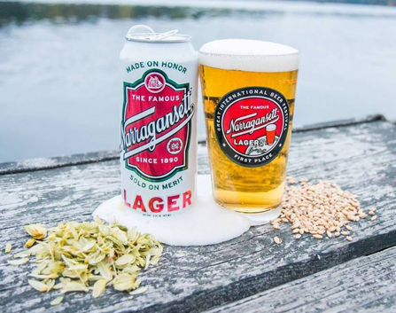

HOME
LAGER
Narragansett Lager
Narragansett Beer Co.
Made on Honor for five generations, The Famous Narragansett Lager has been one of the greats since 1890. Pre-prohibition era drinkers toasted 'Gansett, Dr. Seuss illustrated 'Gansett, the Sox scored with 'Gansett, and Captain Quint crushed "gansett. Today, the highest rated, heritage American lager is brewed to be clean, crisp, refreshing and perfectly balanced.
Located in Pawtucket, RI, Narragansett Lager is old reliable. It was the first beer brewed by “The Original Six” back in 1890, and the best selling beer in New England from the 1930’s to the 1970’s.
Check out their site HERE 